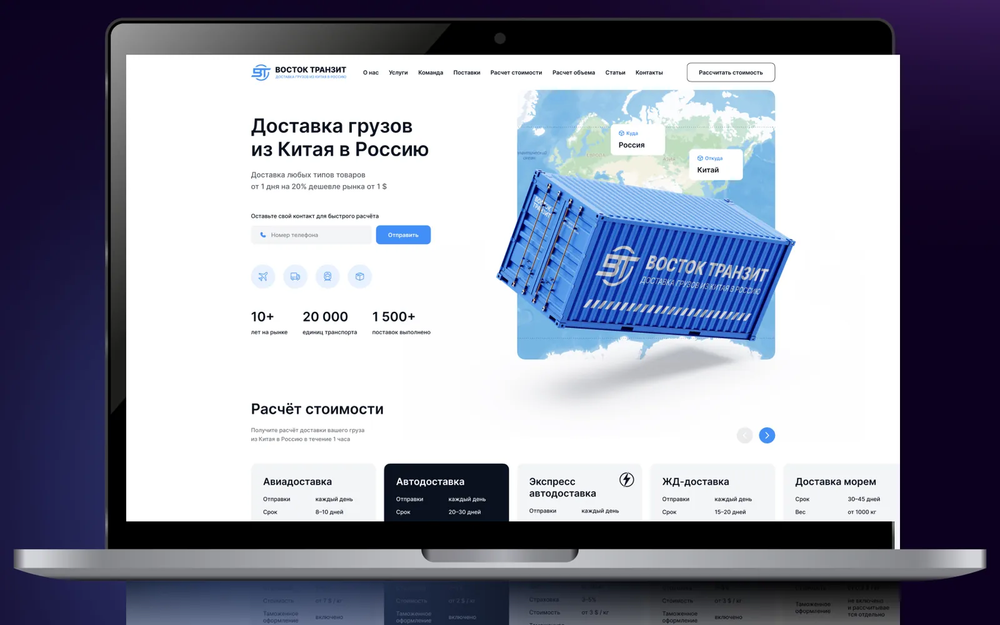
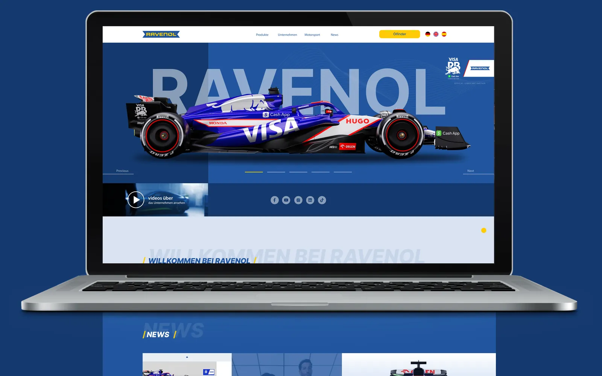
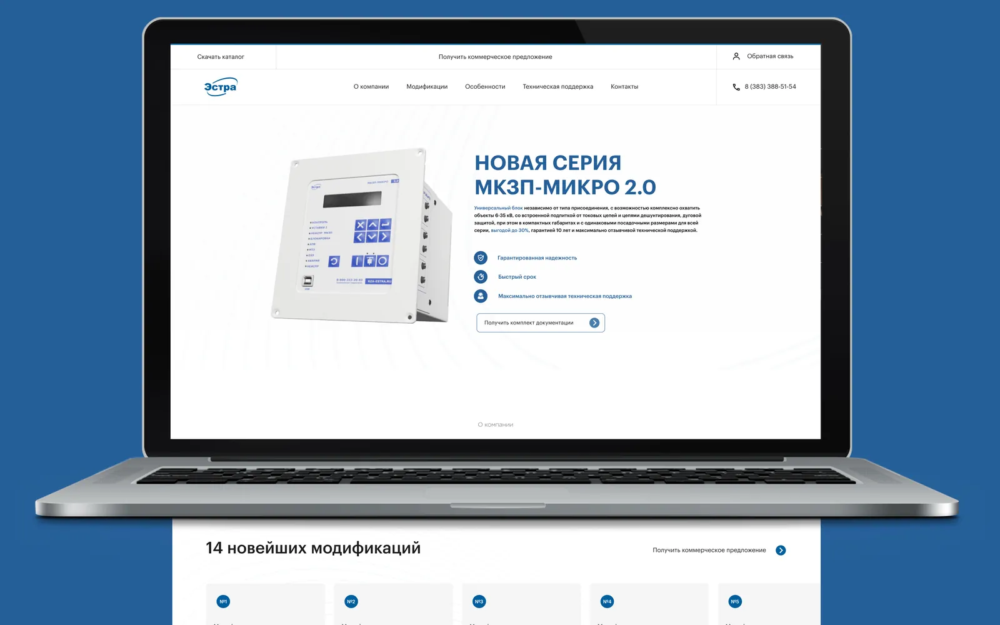
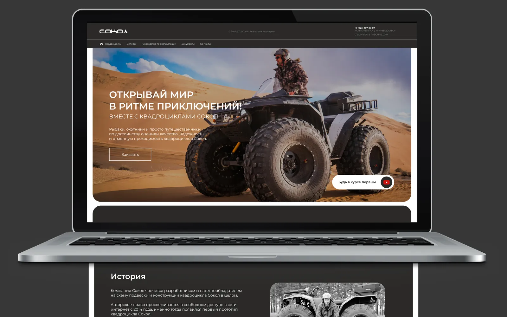
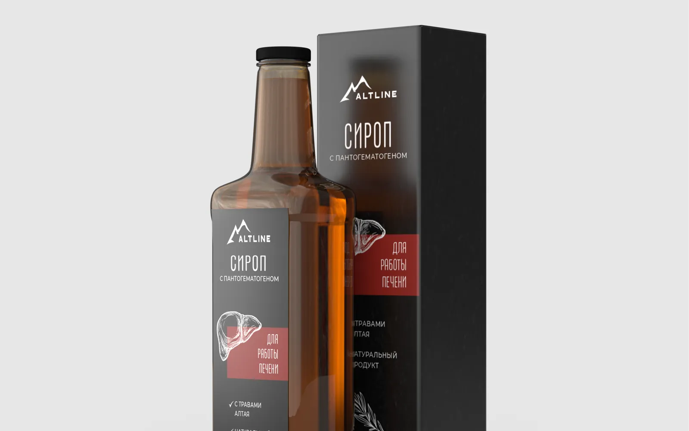

Ravenol
Дизайн новой версии сайта для немецкого производителя моторных масел. Главная страница с подбором масла по автомобилю, продукты, технологии и новости. Работа внутри готового фирменного стиля международного бренда.
Портфолио
Корпоративные сайты, посадочные страницы продуктов и каталоги для производителей, логистов и B2B-компаний. По четырём проектам есть подробные кейсы, остальные работы собраны в ленте ниже.

Подход
Сайт производителя читает не случайный посетитель, а инженер, снабженец или коммерческий директор. Ему нужно быстро найти продукт, сравнить характеристики, скачать документацию и запросить цену. Красивые эффекты тут вторичны: я строю структуру под этот сценарий, а дизайн делаю так, чтобы он не мешал, а помогал.
В разделе собраны корпоративные сайты, страницы отдельных продуктов и каталоги. Некоторые проекты шли вместе с полиграфией и фирменным стилем, и это видно по кейсам.
Когда смотрите кейсы, обращайте внимание не только на картинку первого экрана. Посмотрите, как устроено меню, где стоит кнопка запроса цены, как поданы характеристики и сколько шагов отделяет посетителя от заявки. Именно эти решения отличают сайт производителя от красивой витрины, и их я переношу из проекта в проект, подстраивая под продукт и покупателя.
Кейсы
Дизайн новой версии сайта для немецкого производителя моторных масел. Главная страница с подбором масла по автомобилю, продукты, технологии и новости. Работа внутри готового фирменного стиля международного бренда.
Посадочная страница новой серии устройств релейной защиты, а вместе с ней каталоги, презентации и иконки оборудования. Есть рекомендательное письмо.
Сайт производственной компании и баннер в той же визуальной системе. Есть рекомендательное письмо.
Сайт и упаковка для производителя продуктов питания: один визуальный язык на полке и в интернете.
Лента

RavenolДизайн сайта для Ravenol, немецкого производителя моторных масел
ЭСТРАЭСТРА: сайт и полиграфия для производителя релейной защиты
СОКОЛКорпоративный сайт для производителя квадроциклов СОКОЛ
АлтлайнАлтлайн: упаковка и сайт для производителя натуральной продукцииКроме подробных кейсов, в портфолио есть сайты, которые я показываю без отдельной страницы: Восток Транзит, Дудник, Евромед, Резиновая подкова, Шашлыкоф, СФК, Natme, Sognovita, Интерьеры, Магсмм, ММГ, Нова, СМ.
Рекомендательное письмо есть и от СФК.
Этапы
Каждый сайт из портфолио прошёл одни и те же этапы. Работаю спринтами: промежуточный результат вы видите каждые несколько дней, а не через месяц.
Разбираемся, кто будет читать сайт и что он должен сделать: запросить цену, скачать каталог, оставить заявку. Под это собираю структуру страниц.
Раскладываю блоки главной и ключевых страниц без дизайна, чтобы договориться о содержании до работы над визуалом.
Делаю макеты в фирменном стиле компании, а если его нет, предлагаю визуальное решение. Согласуем главную, затем остальные страницы.
Собираю сайт на выбранной платформе или передаю макеты разработчику, проверяю отображение на телефонах и запускаю.
Услуги
Если нашли в портфолио похожий проект, на странице услуги есть состав работ, этапы и цены.
FAQ
Больше всего для производства и B2B: производители оборудования и масел, энергетика, логистика, продукты питания. Подробнее на странице дизайна для B2B.
Платформу выбираю под задачу. Сайт на Tilda стоит от 80 000 ₽ и запускается быстрее всего. Индивидуальная разработка на коде для сервисов, крупных каталогов и интеграций с CRM стоит от 150 000 ₽. Небольшой сайт с использованием ИИ, например MVP, обойдётся около 50 000 ₽.
На Tilda ориентир 2–3 недели, индивидуальный сайт 6–8 недель. Промежуточные результаты показываю каждые несколько дней, поэтому вы видите, как идёт работа.
Да, от ЭСТРА, СОКОЛ и СФК. Всего у меня 13 официальных рекомендательных писем, они собраны на странице отзывов.
Да. Например, в кейсе Ravenol я делал дизайн новой версии сайта, который уже работал. При редизайне сначала разбираю, что в текущем сайте мешает клиентам, и только потом меняю визуал. Подробнее на странице редизайна.
Да. Комплексный проект под ключ стоит от 150 000 ₽: стиль, сайт и полиграфия делаются по одному плану. Предварительно посчитать бюджет можно в калькуляторе.
Нужен сайт для вашей компании?
Пришлите ссылку на текущий сайт или опишите продукт, и я предложу структуру и сроки.